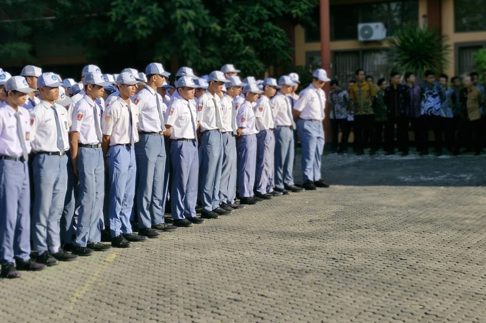

- Pembinaan di 3 Lokasi TNI Jamaluddin mengatakan, tiga lokasi yang disiapkan untuk pembinaan siswa tersebut ialah Yonif Badak Putih 320 di Pandeglang, Batalyon Kavaleri 9 di Kota Tangerang Selatan, dan Grup 1 Kopassus di Kota Serang. Menurut Jamaluddin, program pembinaan dengan melibatkan TNI tersebut mirip dengan program yang dilakukan Pemerintah Provinsi Jawa Barat dengan mengirim siswa SMA/SMK yang melakukan pelanggaran untuk menjalani pembinaan. Pelaksanaan pembinaan, lanjut Jamaluddin, bertujuan membantu siswa memperkuat kedisiplinan, tanggung jawab, dan kemandirian. Dengan pembinaan selama dua hari, diharapkan perilaku siswa menjadi lebih disiplin sehingga tidak mengulangi pelanggaran. "Pembinaan dalam rangka pembinaan rasa tanggung jawab, kemandirian, itu penting. Di situ diajarin, tapi tidak tidak digembleng seperti TNI," ujar dia. Diberi Materi Bela Negara Selain kedisiplinan dan tanggung jawab, siswa juga akan mendapatkan materi mengenai kemandirian dan bela negara sebagai bagian dari penguatan karakter. Pihak sekolah, tambah Jamaluddin, juga akan turut melakukan pengawasan terhadap siswa selama proses pembinaan. "Saya minta TNI membantu kami untuk bagaimana ke depan anak-anak itu bisa berubah,” ucap dia.

Kembali ke Beranda.
|